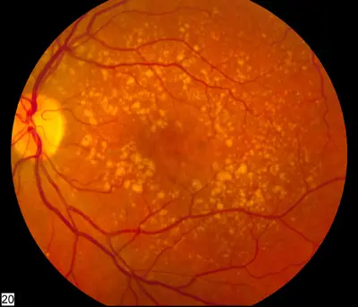

DX.3 — Dégénérescence maculaire liée à l’âge
La dégénérescence maculaire liée à l’âge (DMLA) est la première cause de perte de la vision centrale après 50 ans dans les pays occidentauxS1. Sa forme humide progresse vite et cause 90 % des pertes rapides de la vision dues à la maladieS2. Une déformation récente des lignes impose donc un examen maculaire rapide, car la perte visuelle devient irréversible quand le diagnostic et le traitement tardentS17.
Le tri initial d’une baisse visuelle et les urgences communes se lisent dans le cours du symptôme.
1. Définition
Le Service d’ophtalmologie des Hôpitaux universitaires de Genève (HUG) définit la DMLA comme une dégradation progressive, liée à l’âge, du fonctionnement de la maculaS1. La macula est la zone centrale de la rétine qui porte la vision fineS1. Il en distingue deux formes : la forme sèche, faite de dépôts sous-rétiniens puis de mort des photorécepteurs, et la forme humide, faite de néovaisseaux maculaires qui fuientS2. La Société européenne des spécialistes de la rétine (EURETINA) décrit la forme néovasculaire comme une maladie d’installation aiguë et d’évolution rapide qui atteint la vision centraleS17. Le consortium European Eye Epidemiology classe la maladie en forme précoce et forme tardive ; la forme tardive réunit l’atrophie géographique et la néovascularisation choroïdienneS16.
2. Épidémiologie (Suisse, puis Europe)
Une étude suisse de 2013 estime à environ 40 000 le nombre de patients dont la qualité de vie est altérée par la DMLA en SuisseS8. Dans le réseau suisse de recherche rétinienne, les patients qui débutent un traitement de forme humide ont en moyenne 80,0 ansS11. Les HUG signalent que les femmes sont plus touchées que les hommesS1. La forme sèche concerne 85 à 90 % des patients, alors que la forme humide cause 90 % des pertes rapides de la visionS2.
En Europe, une méta-analyse de 2020 montre une prévalence après 60 ans de 25,3 % pour les formes précoces ou intermédiaires et de 2,4 % pour les formes tardivesS15. L’incidence annuelle des formes tardives y atteint 1,4 pour 1000 habitants, ce qui représente environ 400 000 nouveaux cas européens par anS15. Les chiffres par âge montrent que la forme tardive passe de 0,1 % entre 55 et 59 ans à 9,8 % après 85 ansS16. Ainsi, l’âge reste le premier déterminant, et le vieillissement de la population augmentera le nombre de cas malgré une prévalence en baisseS16.
Les facteurs de risque retenus par les HUG sont l’âge au-delà de 50 ans, l’hérédité, le tabac, l’atteinte de l’autre œil, le diabète, l’hypertension artérielle et le surpoidsS2. L’évolution diffère selon la forme : la forme sèche progresse lentement, tandis que la forme humide progresse beaucoup plus rapidementS2. Depuis l’arrivée des anti-VEGF en 2006, la cécité légale et la malvoyance dues à la DMLA ont nettement reculé en EuropeS17. Le coût du traitement pèse pourtant sur le système suisse, car une forme humide unilatérale coûte de 11 814 à 18 424 francs sur deux ans selon la moléculeS13.
3. Physiopathologie
La DMLA ne se comprend qu’après la base anatomique de la macula, qui porte la plus grande acuité, la vision des couleurs, la fixation et la lectureS1. Dans la forme sèche, les mécanismes qui « nettoient » la macula se détériorent avec l’âge ; les déchets cellulaires forment alors des drusen sous la rétineS2. À un stade tardif, ces dépôts provoquent la mort des photorécepteurs maculaires, ce qui altère la vision centrale de façon lente et définitiveS2.
Dans la forme humide, le facteur de croissance de l’endothélium vasculaire (VEGF) est l’acteur physiopathologique central, car il suscite des néovaisseauxS17. Ces vaisseaux fragiles et poreux laissent fuir sang et liquide, ce qui crée un œdème maculaire puis, s’il persiste, la mort des photorécepteursS2. L’inhibition intraoculaire du VEGF-A bloque efficacement ce processus, restaure la morphologie rétinienne et maintient la fonction chez la plupart des patientsS17. Une hémorragie sous-maculaire est plus brutale encore : les photorécepteurs sus-jacents souffrent en 24 heures et les couches externes dégénèrent en 3 joursS17.
Dans la DMLA, chaque lésion maculaire correspond à un examen révélateur et à une réponse thérapeutique, que le tableau suivant met en regard.
| Perturbation | Exploration qui la montre | Thérapeutique et mécanisme |
|---|---|---|
| Accumulation de déchets sous l’épithélium pigmentaire : drusen S2 | Fond d’œil et tomographie en cohérence optique (OCT) S3 | Surveillance et réduction du risque ; aucun traitement ne restaure le tissu S4 |
| Néovaisseau sous l’épithélium (type 1) ou au-dessus (type 2) S17 | Angiographie à la fluorescéine, puis OCT S17 | Anti-VEGF intravitréen, qui réduit la fuite et l’activité angiogénique S17 |
| Fuite de liquide intra- ou sous-rétinien S4 | OCT répétée, comparée à l’examen précédent S17 | Raccourcir l’intervalle d’injection si le liquide réapparaît S19 |
| Hémorragie sous-maculaire massive S17 | Fond d’œil ; classification selon la taille et l’épaisseur S17 | Avis rétinien urgent : déplacement pneumatique ou vitrectomie S17 |
| Mort des photorécepteurs : atrophie ou fibrose S2 | Fond d’œil, OCT, autofluorescence S17 | Réadaptation basse vision et vision excentrée S7 |
4. Démarche diagnostique
Une DMLA connue n’explique pas automatiquement une nouvelle baisse visuelle ; c’est pourquoi le médecin élimine d’abord les urgences de la liste avant de conclure. Les HUG rappellent que certains symptômes de la DMLA sont communs à d’autres maladies de la rétine qui exigent une intervention dans les meilleurs délaisS1. Une baisse brutale et massive oriente vers une occlusion artérielle rétinienne 🚩 E1, qui relève de la filière vasculaire immédiate. Des céphalées récentes ou une claudication de la mâchoire chez le sujet âgé orientent vers une artérite à cellules géantes 🚩 E2, qui menace les deux yeux.
Des éclairs et un voile qui progresse depuis la périphérie orientent vers un décollement de rétine 🚩 E3, et non vers la macula. Ensuite, les causes fréquentes se discutent : une cataracte voile la vision sans déformer les lignes, et une rétinopathie diabétique s’accompagne d’un terrain et de lésions vasculaires propres. Une occlusion veineuse donne des hémorragies en flammèches dans un territoire veineux, ce qui la distingue d’un néovaisseau choroïdien. Après une injection, toute douleur ou rougeur évoque une endophtalmie, car les injections intravitréennes peuvent en entraînerS19.
| Diagnostic | Élément qui tranche | Piège | Conduite si positif |
|---|---|---|---|
| 🚩 E1 Occlusion artérielle rétinienne | Perte brutale, massive et indolore ; rétine ischémique | Mettre la baisse sur le compte d’une DMLA connue | Filière vasculaire immédiate (DX.9) |
| 🚩 E2 Artérite à cellules géantes | Âge, céphalées, claudication de la mâchoire, signes généraux | Attendre la consultation rétinienne programmée | Corticothérapie sans délai (DX.10) |
| 🚩 E3 Décollement de rétine | Éclairs, corps flottants, voile périphérique | Confondre ombre périphérique et scotome central | Examen rétinien urgent (DX.7) |
| Cataracte | Voile progressif, éblouissement, lignes non déformées | Attribuer des métamorphopsies au cristallin | Examen maculaire avant toute chirurgie (DX.2) |
| Œdème maculaire diabétique ou veineux | Terrain, hémorragies et exsudats vasculaires | Copier le schéma anti-VEGF de la DMLA | Schéma propre à l’indication (DX.5, DX.6) |
5. Anamnèse ciblée et drapeaux rouges
Les HUG décrivent quatre symptômes : une baisse progressive de la netteté, une diminution des contrastes, des métamorphopsies et un scotome central qui s’assombritS1. Ces symptômes sont indolores et touchent uniquement la vision centrale, car la périphérie reste fonctionnelleS1. L’interrogatoire date le dernier moment où chaque œil voyait normalement, car l’œil sain masque longtemps la baisse de l’autre. EURETINA recommande aussi de rechercher l’histoire familiale, le tabagisme, les facteurs de risque systémiques des anti-VEGF et les médicaments en coursS17.
Les médicaments antithrombotiques méritent une question précise, car ils multiplient jusqu’à 11,6 fois le risque d’hémorragie sous-maculaire chez un patient atteint de DMLAS17. Avant une injection, le patient signale une infection, une allergie à l’iode, une grossesse, un allaitement, un infarctus ou un accident vasculaire cérébral récentS6. Chez le patient traité, le médecin recherche les symptômes après injection, la date de la dernière injection et les rendez-vous manqués. Le transport et l’aide disponible comptent, car un calendrier d’injections impraticable compromet le résultat du traitementS8.
| Drapeau rouge | Signification | Action immédiate |
|---|---|---|
| Métamorphopsies ou scotome central nouveaux | Néovaisseau actif possible | Contact ophtalmologique immédiat ; les HUG reçoivent 24 h/24 S1 |
| Douleur, rougeur, photophobie ou flou après injection | Endophtalmie ou inflammation intraoculaire | Évaluation ophtalmologique immédiate, sans attendre la séance suivante S19 |
| Nausées, céphalées ou œil qui « lance » après injection | Hypertonie oculaire | Traitement immédiat de la tension oculaire S4 |
| Perte brutale massive, ou signes généraux après 50 ans | Occlusion artérielle ou artérite | Filière d’urgence des DX.9 et DX.10 |
| Baisse rapide sous antithrombotique | Hémorragie sous-maculaire | Avis rétinien urgent ; ne pas interrompre seul le traitement antithrombotique |
6. Examen physique ciblé, région par région
L’examen suit l’ordre de la consultation ophtalmologique : acuité visuelle, grille d’Amsler, pression intraoculaire, segment antérieur, puis fond d’œil après dilatationS3. EURETINA exige une mesure standardisée de la meilleure acuité visuelle corrigée et une biomicroscopie de la macula des deux yeuxS17. Le médecin examine toujours l’œil adelphe, car une forme humide peut s’y développer pendant le suiviS17. Un examen normal du segment antérieur ne rassure pas, car la DMLA est indolore et ne rougit pas l’œilS1.
7. Approche syndromique
La DMLA réunit cinq syndromes maculaires, qui se succèdent ou coexistent dans un même œilS2. Le syndrome précoce reste souvent muet ; le syndrome exsudatif associe des métamorphopsies récentes à du liquide ou du sang ; le syndrome atrophique associe un scotome lent à une perte tissulaireS2. Le syndrome hémorragique massif constitue l’urgence chirurgicale de la maladie, et le syndrome séquellaire laisse un déficit malgré l’assèchementS17.
| Syndrome | Signes fonctionnels | Signes physiques |
|---|---|---|
| Précoce | Peu ou pas de symptôme | Drusen jaunâtres sous la rétine S2 |
| Exsudatif actif | Métamorphopsies, baisse rapide S1 | Liquide intra- ou sous-rétinien, hémorragie nouvelle S17 |
| Atrophique | Scotome central lent, gêne de lecture S1 | Plage d’atrophie au fond d’œil et à l’OCT S2 |
| Hémorragique massif | Baisse brutale, tache sombre S17 | Hémorragie au-delà des arcades S17 |
| Séquellaire | Déficit stable malgré le traitement | Fibrose, cicatrice atrophique ou déchirure de l’épithélium S17 |
8. Diagnostic positif et critères
Le consortium European Eye Epidemiology pose le diagnostic sur des photographies du fond d’œil selon la classification de Rotterdam, qui sépare forme précoce et forme tardiveS16. La forme néovasculaire exige ensuite la preuve d’un néovaisseau : EURETINA tenait l’angiographie à la fluorescéine pour le seul examen qui confirme son existenceS17. La mise à jour EURETINA de 2026 donne à l’OCT un rôle central pour le diagnostic et le suivi, et définit l’activité surtout par les variations du liquide rétinienS18.
Trois questions structurent la conclusion : la maladie est-elle présente, quelle forme domine, et la lésion est-elle active aujourd’hui ? Les critères d’activité retenus dans les schémas européens sont le liquide sous- ou intrarétinien, une perte de plus de 5 lettres et une hémorragie nouvelle ou persistanteS17. Des kystes intrarétiniens persistants traduisent en revanche une dégénérescence irréversible et ne justifient pas, à eux seuls, une nouvelle injectionS17.
| Constat | Ce qu’il établit | Ce qu’il ne suffit pas à décider |
|---|---|---|
| Âge et drusen au fond d’œil | Forme précoce S16 | Ne suffit pas à poser une indication d’injection |
| Atrophie géographique | Forme tardive sèche S16 | Ne suffit pas sans néovaisseau actif |
| Néovaisseau prouvé par angiographie ou OCT | Forme tardive humide S17S18 | Indication d’anti-VEGF si la lésion est active |
| Liquide, perte de plus de 5 lettres ou hémorragie nouvelle | Activité S17 | Retraitement ou raccourcissement de l’intervalle |
| Kystes intrarétiniens persistants isolés | Dégénérescence S17 | Ne justifie pas seul une injection |
9. Examens complémentaires
9.a Gold standard
Les recommandations EURETINA font de l’angiographie à la fluorescéine l’examen de référence pour confirmer un néovaisseau, préciser sa localisation et son étendueS17. Elle sert aussi à la classification clinique et au début du traitement, alors que le suivi repose ensuite sur l’OCT seuleS17.
9.b Première intention
Le bilan de première intention associe acuité, fond d’œil dilaté et tomographie en cohérence optique des deux maculasS3. L’OCT mesure l’épaisseur rétinienne, montre l’œdème ou le liquide sous la rétine et détecte de très petites anomalies maculairesS3. L’image décisive est donc la coupe OCT, comparée à la précédente, qui oriente le traitement et la date de l’injection suivanteS18.
9.c Alternatives
L’angiographie fluorescéinique se discute en cas d’allergie connue, d’asthme ou de traitement bêtabloquant, car elle peut provoquer une anaphylaxieS25. Elle s’évite pendant la grossesse sauf nécessité absolue, et l’allaitement s’interrompt après l’examenS25. L’OCT, sans injection, devient alors l’examen principal ; l’autofluorescence complète l’évaluation de l’atrophie sans colorantS17.
9.d Deuxième intention
L’angiographie au vert d’indocyanine intervient quand une vasculopathie polypoïdale ou une prolifération angiomateuse est suspectée, car elle modifie la stratégieS17. L’angiographie à la fluorescéine reste utile quand l’OCT ne fournit pas d’information fiable, notamment en forte myopie ou à la bordure d’une cicatrice fibreuseS17.
| Résultat | Signification | Conduite |
|---|---|---|
| Liquide intra- ou sous-rétinien nouveau à l’OCT | Néovaisseau actif S17 | Injection et intervalle raccourci S19 |
| Drusen sans liquide | Forme précoce S16 | Surveillance et autosurveillance S17 |
| Atrophie sans liquide | Forme atrophique S2 | Réadaptation, pas d’anti-VEGF S4 |
| Diffusion tardive ponctuée à l’angiographie | Néovaisseau de type 1 S17 | Anti-VEGF S17 |
| Polypes au vert d’indocyanine | Vasculopathie polypoïdale S17 | Stratégie adaptée par le rétinologue S17 |
| Baisse sans lésion explicative | Discordance | Rechercher une autre atteinte, oculaire ou neurologique |
10. Arbre décisionnel
L’arbre place les urgences d’abord, puis sépare la forme active, qui se traite, de la forme inactive, qui se surveille et se réadapte.
- Si la baisse est brutale et massive, ou si des signes généraux existent chez le sujet âgé, le médecin suit la filière des DX.9 et DX.10.
- Si un voile périphérique ou des éclairs existent, il adresse le patient pour un examen rétinien urgent (DX.7).
- Si une douleur, une rougeur ou une baisse suit une injection, il fait examiner l’œil immédiatement pour une endophtalmieS19.
- Si des métamorphopsies ou un scotome sont récents, il obtient vite une OCTS1.
- Si l’OCT montre du liquide ou du sang, le rétinologue débute un anti-VEGFS18.
- Si une hémorragie sous-maculaire est massive, il discute dans les jours qui suivent un déplacement pneumatique ou une vitrectomieS17.
- Si seuls des drusen sont présents, il programme une surveillance et enseigne l’autosurveillanceS17.
- Si une atrophie domine sans liquide, il oriente vers la réadaptation basse visionS7.
- Si la réponse est insuffisante, il vérifie le diagnostic, cherche une vasculopathie polypoïdale et envisage un changement de moléculeS17.
11. Prise en charge selon les recommandations suisses
11.A But
Aucun traitement ne guérit la DMLA ni ne rétablit entièrement l’acuité ; le but est de ralentir la progression et de maintenir la visionS4. Selon les HUG, les injections stabilisent la vision dans 90 % des cas et permettent de regagner une certaine acuité dans 20 à 30 % des casS4. Dans l’étude suisse ASTERIA, l’aflibercept en schéma à intervalles adaptés a fait gagner 8,4 lettres à 12 mois et 5,0 lettres à 24 moisS9. Le but anatomique est un œil sans liquide, car EURETINA définit l’activité surtout par le liquide détecté à l’OCTS18.
11.B Moyens
Une forme humide active impose un diagnostic précoce et un début rapide des anti-VEGF, selon la mise à jour EURETINA de 2026S18. Les complications graves suivent une conduite chronologique d’urgence : hémorragie sous-maculaire massive, endophtalmie, hypertonie après injection et vascularite rétinienne. Les injections intravitréennes, toutes les quatre semaines au départ, constituent le traitement le plus utilisé, car il est le plus efficace et le plus sûr pour l’œilS4. Le schéma « traiter et prolonger » est désormais le schéma préféré du retraitementS18.
Cinq molécules disposent d’une information professionnelle suisse dans la forme humide : l’aflibercept, le ranibizumab, le faricimab, le brolucizumab et la vertéporfine. Les quatre premières s’injectent dans le vitré, tandis que la vertéporfine s’utilise en thérapie photodynamique quand les injections ne suffisent pasS4. L’injection intravitréenne se fait en ambulatoire, et le patient repart chez lui immédiatement aprèsS6.
| Molécule et spécialité | Dose AIPS et voie | Durée et rythme | Contre-indication majeure |
|---|---|---|---|
| Aflibercept, Eylea® 2 mg (n° 62393) S19 | 2 mg dans 50 µl, intravitréen, toutes les 4 semaines pendant 3 mois S19 | Puis 8 semaines, ou par étapes jusqu’à 16 semaines S19 | Grossesse et allaitement contre-indiqués S19 |
| Aflibercept, Eylea® 8 mg (n° 62393) S20 | 8 mg dans 70 µl, intravitréen, par mois pendant 3 mois S20 | Jusqu’à 16 puis 24 semaines S20 | Grossesse et allaitement contre-indiqués S20 |
| Ranibizumab, Lucentis® (n° 57664) | 0,5 mg dans 0,05 ml, intravitréen, par mois S21 | Intervalle jamais inférieur à un mois S21 | Infection oculaire, inflammation active S21 |
| Faricimab, Vabysmo® (n° 68395) | 6 mg dans 0,05 ml, toutes les 4 semaines pour 4 injections S22 | Jusqu’à 20 semaines S22 | Infection oculaire, inflammation active S22 |
| Brolucizumab, Beovu® (n° 67244) | 6 mg dans 0,05 ml, 3 injections mensuelles S23 | Toutes les 12 semaines, jamais moins de 8 S23 | Arrêt si vascularite ou occlusion rétinienne S23 |
| Vertéporfine, Visudyne (n° 55269) | 6 mg/m², perfusion intraveineuse de 10 minutes S24 | Activation laser à 15 minutes S24 | Porphyrie, insuffisance hépatique sévère S24 |
La forme sèche ne dispose d’aucun traitement curatif ; seuls des compléments nutritionnels antioxydants peuvent être proposés à certains stades pour ralentir l’évolutionS4. L’atrophie géographique a été traitée par pegcetacoplan dans une série suisse de 7 yeux, avec une perte médiane de 7 lettres et une atrophie qui progressait encoreS14. Ce produit ne dispose d’aucune information professionnelle suisse dans le registre refdata consulté ; il reste un recours spécialisé hospitalier.
La réadaptation basse vision apprend la vision excentrée et choisit des aides grossissantes, un éclairage plus fort et des moyens auxiliaires adaptésS7. La mise à jour EURETINA de 2026 inclut l’orientation vers les services de basse vision dans ses recommandationsS18. Les situations spéciales concernent la femme en âge de procréer, l’antécédent artériel récent, le traitement bilatéral et la conduite automobile. Le volet social organise transport, aides et démarches auprès des assurances, car la dépendance augmente avec la maladieS8.
11.C Surveillance
Un examen de contrôle accompagne chaque injection, et l’intervalle se raccourcit dès que l’acuité ou la morphologie se dégradeS19. Le suivi associe une acuité mesurée selon une procédure identique, une OCT et une pression intraoculaire au moins tous les 6 moisS17. Les critères de suspension de l’AIPS imposent d’interrompre le traitement devant certaines complications rétiniennes ou une chirurgie oculaire procheS19.
11.D Pronostic et sortie
On ne devient pas aveugle avec la DMLA, car la vision périphérique continue à fonctionnerS7. Dans la cohorte suisse XTEND, l’acuité a gagné 5,7 lettres à 12 mois et 5,6 lettres à 24 mois, au prix de 13,7 injections en deux ansS10. Une hémorragie sous-maculaire massive garde un pronostic réellement défavorable, ce qui justifie la vitesse de la prise en chargeS17. Les critères de sortie après injection se vérifient un par un avant que le patient quitte le service.
12. Prévention
En prévention primaire, les HUG conseillent d’arrêter de fumer, d’adopter une alimentation riche en vitamines et minéraux et de porter des lunettes de soleil par forte luminositéS2. Ils recommandent une consultation ophtalmologique annuelle après 50 ans, qui cible le groupe d’âge où la prévalence croît (point 2)S2.
En prévention secondaire, le patient porteur de drusen apprend l’autosurveillance par la grille d’Amsler entre les visites, car une détection précoce préserve l’acuité initialeS17. En effet, une meilleure acuité au départ donne de meilleurs résultats finaux, alors que la plupart des lésions sont découvertes après une perte visuelle déjà importanteS17.
En prévention tertiaire, la réadaptation basse vision, les aides optiques et l’éclairage limitent le handicap et la dépendanceS7. Le respect du calendrier d’injections prévient aussi la perte visuelle, car les résultats réels baissent quand le suivi devient discontinuS17.
13. Points clés
- Une déformation récente des lignes chez un patient de plus de 50 ans impose un fond d’œil et une OCT rapides, car la forme humide progresse viteS2.
- Une DMLA connue n’explique jamais d’office une baisse brutale : occlusion artérielle, artérite et décollement passent d’abord.
- Le liquide à l’OCT, et non la présence de drusen, définit l’activité qui justifie une injection d’anti-VEGFS18.
- Douleur, rougeur ou baisse après une injection imposent un examen immédiat pour une endophtalmieS19.
- La DMLA ne rend pas aveugle au sens strict, et la réadaptation basse vision fait partie du traitementS7.
14. Pièges et questions fréquentes à l’examen fédéral suisse
Les questions suivantes portent sur les confusions de gravité, de critères et de doses les plus fréquentes ; chaque réponse renvoie au point qui la justifie.
| Question | Réponse | Raison |
|---|---|---|
| Des drusen au fond d’œil justifient-ils une injection d’anti-VEGF ? | Non. | Les drusen signent une forme précoce ; seule une activité néovasculaire justifie l’injection (point 8) S16S17 |
| Une grille d’Amsler normale exclut-elle une forme humide active ? | Non. | Sa sensibilité supervisée n’atteint que 0,42 ; l’OCT tranche (point 6) S17 |
| Une patiente de 80 ans traitée pour DMLA perd brutalement la vision de l’autre œil : que faire d’abord ? | Chercher une artérite et une occlusion artérielle. | La DMLA connue n’explique pas une baisse brutale (point 4) S1 |
| Faut-il injecter tout le contenu de la seringue préremplie d’Eylea® ? | Non. | La seringue contient un excédent, et tout injecter provoque un surdosage avec hypertonie (point 11) S19 |
| Quelle est la dose d’Eylea® dans la forme humide au début ? | 2 mg toutes les 4 semaines pendant 3 mois S19 | L’intervalle s’allonge ensuite selon l’acuité et l’OCT (point 11) S19 |
| Peut-on injecter un anti-VEGF chez une femme enceinte ? | Non pour l’aflibercept. | L’AIPS d’Eylea® contre-indique grossesse et allaitement (point 11) S19 |
| Une douleur oculaire le lendemain d’une injection peut-elle attendre la visite suivante ? | Non. | Elle évoque une endophtalmie et impose un examen immédiat (point 11) S19 |
| Sur quel examen se décide le retraitement ? | L’OCT. | Le liquide rétinien définit l’activité ; l’acuité seule ne suffit pas (point 8) S18S17 |
| Un patient sous anticoagulant voit une tache sombre centrale : quand consulter ? | Le jour même. | Une hémorragie sous-maculaire lèse les photorécepteurs en 24 heures (point 3) S17 |
Sources
Toutes les sources ont été consultées le 11.11.2026 (Europe/Zurich).
- [S1] Hôpitaux universitaires de Genève (HUG), Service d’ophtalmologie. Atlas santé : la dégénérescence maculaire liée à l’âge (DMLA), introduction ; mise à jour du 03.09.2025. https://www.hug.ch/atlas-sante/pathologie-et-traitement/degenerescence-maculaire-liee-lage-dmla
- [S2] HUG, Service d’ophtalmologie. Les formes et les causes de la dégénérescence maculaire liée à l’âge ; mise à jour du 03.09.2025. https://www.hug.ch/ophtalmologie/formes-causes-degenerescence-maculaire
- [S3] HUG, Service d’ophtalmologie. Le diagnostic de la dégénérescence maculaire liée à l’âge ; mise à jour du 03.09.2025. https://www.hug.ch/ophtalmologie/diagnostic-degenerescence-maculaire
- [S4] HUG, Service d’ophtalmologie. Les traitements de la DMLA ; Quels sont les traitements de la DMLA humide ? ; mises à jour du 03.09.2025. https://www.hug.ch/ophtalmologie/traitements-pour-guerir-degenerescence-maculaire et https://www.hug.ch/node/23604
- [S5] HUG, Service d’ophtalmologie. Quelles sont les complications des traitements de la DMLA ? https://www.hug.ch/node/23606
- [S6] HUG, Service d’ophtalmologie. Comment vous préparer aux traitements de la DMLA humide ? ; mise à jour du 13.07.2020. https://www.hug.ch/node/23605
- [S7] HUG, Service d’ophtalmologie. Vivre avec la DMLA ; mise à jour du 06.05.2025. https://www.hug.ch/ophtalmologie/vivre-avec-dmla
- [S8] [Coping with wet age-related macular degeneration — a study from Switzerland]. Klin Monbl Augenheilkd 2013 (résumé). PMID 24327288. doi:10.1055/s-0033-1351029. https://pubmed.ncbi.nlm.nih.gov/24327288/
- [S9] Two-year outcomes of intravitreal aflibercept in a Swiss routine treat and extend regimen for patients with neovascular AMD (étude ASTERIA, quatre cliniques rétiniennes suisses). Sci Rep 2020;10:20256. PMC7680100. https://www.ebi.ac.uk/europepmc/webservices/rest/PMC7680100/fullTextXML
- [S10] Two-Year Switzerland Cohort Results from a Global Observational Study Investigating Proactive Dosing with Intravitreal Aflibercept 2 mg in nAMD (XTEND, cohorte suisse). J Clin Med 2025;14:2370. PMC11989833. https://pubmed.ncbi.nlm.nih.gov/40217821/
- [S11] Swiss Retina Research Network. One-Year Outcomes of Faricimab in Treatment-Naïve nAMD. Ophthalmol Ther 2025. PMC12579096. https://www.ebi.ac.uk/europepmc/webservices/rest/PMC12579096/fullTextXML
- [S12] Swiss Retina Research Network. One-Year Real-World Outcomes of Aflibercept 8 mg in Treatment-Naïve nAMD. Ophthalmol Ther 2026. PMC12976334. https://pubmed.ncbi.nlm.nih.gov/41634482/
- [S13] Cost-minimisation analysis of anti-VEGF therapies in nAMD and diabetic macular oedema in Switzerland. J Med Econ 2025 (résumé). PMID 40692491. https://pubmed.ncbi.nlm.nih.gov/40692491/
- [S14] Gabathuler F, Cozzi M, et al. (Hôpital universitaire de Zurich). Real-World Case Series of Intravitreal Pegcetacoplan for Geographic Atrophy in Switzerland. Klin Monbl Augenheilkd 2026 (résumé). PMID 42008992. https://pubmed.ncbi.nlm.nih.gov/42008992/
- [S15] Li JQ, Welchowski T, Schmid M, et al. Prevalence and incidence of AMD in Europe: a systematic review and meta-analysis. Br J Ophthalmol 2020;104:1077-1084 (résumé). PMID 31712255. https://pubmed.ncbi.nlm.nih.gov/31712255/
- [S16] Colijn JM, et al. (consortium European Eye Epidemiology). Prevalence of AMD in Europe: the past and the future. Ophthalmology 2017;124:1753-1763 (résumé). PMID 28712657. https://pubmed.ncbi.nlm.nih.gov/28712657/
- [S17] Schmidt-Erfurth U, et al. Guidelines for the management of neovascular AMD by the European Society of Retina Specialists (EURETINA). Br J Ophthalmol 2014;98:1144-67. PMC4145443. https://www.ebi.ac.uk/europepmc/webservices/rest/PMC4145443/fullTextXML
- [S18] Loewenstein A, Zinkernagel MS, et al. Updated Guidelines for the Management of nAMD by the European Society of Retina Specialists (EURETINA). Ophthalmologica, 12.10.2026 (résumé). PMID 42862818. https://pubmed.ncbi.nlm.nih.gov/42862818/
- [S19] Swissmedic, information professionnelle (AIPS) Eylea® 2 mg/50 µl (aflibercept), n° 62393, Bayer (Schweiz) AG, mise à jour septembre 2026. https://files.refdata.ch/simis-public-prod/MedicinalDocuments/3a50bb15b1b94fc9b3d3d187b066ad53-fr.html
- [S20] Swissmedic, AIPS Eylea® 8 mg/70 µl (aflibercept), n° 62393 (document 003), Bayer (Schweiz) AG, mise à jour septembre 2026. https://files.refdata.ch/simis-public-prod/MedicinalDocuments/39979e47e9764dea94333e9340b3e4b7-fr.html
- [S21] Swissmedic, AIPS Lucentis® (ranibizumab), n° 57664, Novartis Pharma Schweiz AG, mise à jour juin 2026. https://files.refdata.ch/simis-public-prod/MedicinalDocuments/62409d1a036140438fde5504aeaa50a1-fr.html
- [S22] Swissmedic, AIPS Vabysmo® (faricimab), n° 68395, Roche Pharma (Schweiz) AG, mise à jour octobre 2026. https://files.refdata.ch/simis-public-prod/MedicinalDocuments/9f498b8f83bb4125b8cf5b930a50c724-fr.html
- [S23] Swissmedic, AIPS Beovu® (brolucizumab), n° 67244, Novartis Pharma Schweiz AG, mise à jour avril 2026. https://files.refdata.ch/simis-public-prod/MedicinalDocuments/94813fe488554771b7a3c65470e1c76f-fr.html
- [S24] Swissmedic, AIPS Visudyne (vertéporfine), n° 55269, CHEPLAPHARM Schweiz GmbH, mise à jour septembre 2021. https://files.refdata.ch/simis-public-prod/MedicinalDocuments/cdbd3e104e7348629f43727d1fa52702-fr.html
- [S25] Swissmedic, AIPS Fluorescéine 10 % Faure (fluorescéine sodique), n° 54604, mise à jour août 2023. https://files.refdata.ch/simis-public-prod/MedicinalDocuments/931565a22f844ec5978c2de1c567e605-fr.html
Contenu établi à partir des sources citées ; non validé cliniquement par un médecin.
Formes de la DMLA et conséquence pratique
| Forme | Ce qu’elle désigne | Conséquence pratique |
|---|---|---|
| Forme précoce ou intermédiaire | Des drusen, dépôts jaunâtres, s’accumulent sous la rétine sans perte tissulaire étendue S2 | Surveillance, réduction du risque et autosurveillance ; aucune injection pour des drusen seuls |
| Forme tardive sèche (atrophie géographique) | Les cellules photoréceptrices de la macula meurent ; l’évolution est généralement lente S2 | Réadaptation visuelle ; aucun anti-VEGF sans néovaisseau actif |
| Forme tardive humide (néovasculaire) | Des vaisseaux anormaux, fragiles et poreux, laissent fuir sang et liquide sous la macula S2 | Imagerie rapide puis injections intravitréennes d’anti-VEGF |
Une même macula peut porter des drusen, une atrophie et un néovaisseau ; le nom de la forme dépend donc de la lésion qui domine et de son activitéS16.
Chiffres clés : Suisse, puis Europe
| Chiffre | Population | Année | Source |
|---|---|---|---|
| Environ 40 000 patients | Suisse, patients dont la qualité de vie est altérée | 2013 | S8 |
| Âge moyen 80,0 ans | Suisse, 130 yeux traités par faricimab dans 11 centres | 2025 | S11 |
| 25,3 % (formes précoces ou intermédiaires) et 2,4 % (formes tardives) | Europe, personnes de 60 ans et plus | 2020 | S15 |
| 1,4 pour 1000 par an | Europe, incidence des formes tardives | 2020 | S15 |
| 3,5 % à 55–59 ans, 17,6 % à 85 ans et plus | Europe, forme précoce, 14 cohortes et 42 080 personnes | 2017 | S16 |
| 0,1 % à 55–59 ans, 9,8 % à 85 ans et plus | Europe, forme tardive | 2017 | S16 |
| De 67 à 77 millions de personnes atteintes d’ici 2050 | Union européenne, toutes formes | 2020 | S15 |
Une prévalence décrit un groupe d’âge à un moment donné ; elle ne donne pas la probabilité qu’une baisse visuelle d’un patient précis soit une DMLAS16. Le consortium européen observe une baisse de prévalence de la forme tardive après 2006, qu’il attribue à des modes de vie plus sains et aux anti-VEGFS16. Il prévoit néanmoins, d’ici 2040, de 3,9 à 4,8 millions d’Européens atteints de forme tardiveS16.
Facteurs de risque : du terrain à la décision
L’âge supérieur à 50 ans, l’hérédité, une peau claire avec des yeux bleus et une DMLA de l’autre œil augmentent la probabilité préalableS2. Le tabac, le diabète, l’hypertension, une alimentation déséquilibrée et le surpoids s’y ajoutent ; l’exposition répétée au soleil sans protection pourrait constituer un risque supplémentaireS2. EURETINA demande de rechercher l’histoire familiale et le tabagisme dès la première plainte de baisse visuelle ou de métamorphopsiesS17.
Le tabac est le seul facteur majeur qui se corrige ; c’est pourquoi son arrêt fait partie de chaque consultation. L’atteinte de l’autre œil impose une surveillance rapprochée de l’œil adelphe, car il peut développer à son tour une forme néovasculaireS17.
Coût suisse des anti-VEGF
Une analyse de minimisation des coûts montre, sur deux ans, 11 814 francs pour la formulation forte d’aflibercept et 13 737 francs pour le faricimab dans une forme humide unilatéraleS13. Le ranibizumab de référence atteint 18 424 francs, et ses biosimilaires coûtent de 16 243 à 17 497 francsS13. Le nombre d’injections pèse donc autant que le prix unitaire, ce qui explique l’intérêt des schémas qui espacent les intervallesS13.
Les traitements de la DMLA sont remboursés par l’assurance obligatoire des soins (LAMal), sous déduction de la franchise et de la quote-part de 10 %S4.
Base à connaître : la macula et ses couches
La macula est la zone centrale de la rétine ; elle offre la plus grande acuité visuelle et permet de lire, de reconnaître les visages et d’enfiler une aiguilleS1. Les photorécepteurs maculaires captent la lumière ; leur mort, sèche ou exsudative, explique la perte de la vision centraleS2.
L’épithélium pigmentaire rétinien sépare la rétine neurosensorielle de la choroïde ; un néovaisseau de type 1 reste sous cet épithélium, tandis qu’un néovaisseau de type 2 le franchit vers l’espace sous-rétinienS17. La vision périphérique dépend de la rétine extramaculaire ; elle persiste dans la DMLA, ce qui explique pourquoi la maladie ne rend pas aveugle au sens strictS7.
Le piège consiste à attribuer une perte du champ périphérique à la DMLA : une telle perte oriente vers une autre atteinte rétinienne ou neurologique, car la maladie épargne la périphérieS1.
Types de néovaisseaux et variantes
Le néovaisseau occulte, ou type 1, se situe sous l’épithélium pigmentaire ; l’angiographie montre une hyperfluorescence ponctuée avec diffusion tardiveS17. Le néovaisseau visible, ou type 2, franchit l’épithélium et siège dans l’espace sous-rétinienS17.
La prolifération angiomateuse rétinienne naît du plexus capillaire profond ; elle associe hémorragie focale, œdème et exsudats lipidiques intrarétiniensS17. La vasculopathie polypoïdale choroïdienne donne plus souvent des décollements séreux ou hémorragiques récidivants de l’épithélium pigmentaireS17. Elle est plus fréquente chez les patients d’origine asiatique ou africaine ; l’angiographie au vert d’indocyanine la révèle, et ce diagnostic modifie la stratégieS17.
Pourquoi les urgences passent avant la DMLA
Une DMLA humide menace la vision d’un œil en quelques semaines, tandis qu’une occlusion artérielle ou une artérite menacent la vision en quelques heures. Le tri repose donc sur le mode d’installation, la douleur, les signes généraux et l’état du champ périphérique, que la DMLA épargneS1.
L’erreur classique du débutant consiste à écrire « DMLA connue » et à programmer un contrôle ordinaire. Par exemple, une patiente âgée traitée pour une DMLA gauche qui perd brutalement la vision droite doit d’abord être examinée pour une artérite, car l’œil gauche reste alors menacé. Les drapeaux rouges du point 5 guident ce tri au téléphone comme au cabinet.
Métamorphopsies : caractériser le symptôme
Les métamorphopsies sont des déformations des images et des lignes ; elles traduisent un dérangement de l’architecture maculaire par le liquide ou la cicatriceS1. Le siège est central et monoculaire ; le patient les découvre souvent en fermant l’œil sain devant un cadre de porte ou un carrelage. L’installation récente, en quelques jours, oriente vers une forme humide active, car la fuite des néovaisseaux modifie vite l’épaisseur rétinienneS2.
Le symptôme est typique d’une atteinte maculaire, mais il n’est pas spécifique de la DMLA ; c’est pourquoi l’OCT tranche entre les maculopathiesS3. EURETINA place l’apparition de métamorphopsies parmi les plaintes qui déclenchent l’examen et la surveillance de la forme néovasculaireS17.
Scotome central : caractériser le symptôme
Le scotome central est une tache trouble au centre de la vision, qui devient progressivement plus sombreS1. Il suit le regard, gêne la lecture et la reconnaissance des visages, mais laisse la vision périphérique intacteS1.
Un scotome qui s’installe en mois ou en années est typique de l’atrophie, qui évolue lentementS2. Un scotome apparu en jours est atypique pour l’atrophie seule ; il impose de rechercher un néovaisseau ou une hémorragieS2. Un déficit périphérique ou altitudinal n’appartient pas à la DMLA et oriente vers une cause vasculaire, neurologique ou un décollement.
Antithrombotiques et hémorragie sous-maculaire
EURETINA rapporte que la prise d’antithrombotiques peut multiplier jusqu’à 11,6 fois le risque d’hémorragie sous-maculaire chez le patient atteint de DMLAS17. L’indication cardiovasculaire de ces médicaments reste pourtant prioritaire ; leur arrêt éventuel se décide avec le prescripteur, jamais par le seul ophtalmologue.
La question sert surtout à prévenir : un patient anticoagulé qui voit apparaître une tache sombre doit consulter le jour même, car l’hémorragie lèse les photorécepteurs en 24 heuresS17.
Symptômes après injection intravitréenne
L’information professionnelle d’Eylea® demande d’instruire le patient pour qu’il signale immédiatement douleurs oculaires, rougeur, sensibilité à la lumière ou vision floueS19. Ces signes évoquent une endophtalmie, car les injections intravitréennes peuvent entraîner endophtalmies, inflammations et décollements de rétineS19.
Une rougeur isolée avec une petite hémorragie conjonctivale et une douleur due au désinfectant restent fréquentes et bénignesS5. En revanche, une baisse de vue, des sécrétions abondantes ou une douleur qui augmente imposent une consultation aux urgences ophtalmologiquesS5. Nausées et céphalées après l’injection peuvent signaler une hausse de tension oculaire, qui se traite immédiatementS4.
Drapeaux rouges au téléphone
Au téléphone, l’assistante médicale pose trois questions : la baisse est-elle brutale, l’œil est-il douloureux ou rouge, une injection a-t-elle eu lieu récemment ? Une réponse positive fait voir le patient le jour même, car ces trois situations ne relèvent pas de la DMLA chronique.
Une déformation récente des lignes sans douleur justifie aussi un contact immédiat avec l’ophtalmologue, selon la consigne des HUGS1.
Région 1 — Acuité visuelle de loin et de près
Le geste mesure chaque œil séparément, avec la correction optique habituelle, de loin puis de prèsS17. Il note le résultat en lettres ETDRS (Early Treatment of Diabetic Retinopathy Study) quand l’appareil le permetS17. Le normal correspond à une acuité stable par rapport à la mesure précédente, réalisée dans les mêmes conditionsS17.
Une baisse de plus de 5 lettres fait partie des critères d’activité utilisés dans les schémas à intervalles adaptésS17. Le piège tient aux conditions de mesure : une autre correction ou un autre éclairage simule une évolution ; la mesure se répète donc selon une procédure identiqueS17. L’acuité seule ne suffit pas à détecter une récidive néovasculaire ; elle se confronte toujours à l’OCTS17.
Région 2 — Grille d’Amsler
Le patient garde sa correction de près, couvre un œil et fixe le point central de la grille ; il signale les lignes ondulées et les zones manquantesS3. Le normal montre des lignes droites, continues et un carré complet autour du point de fixation.
Des lignes déformées signent des métamorphopsies, et une zone grise ou absente signe un scotomeS3. Le test reste peu sensible : sous supervision, sa sensibilité pour un nouveau néovaisseau n’atteint que 0,42S17. Une grille normale n’exclut donc pas une forme active ; EURETINA la conseille cependant pour l’autosurveillance entre deux visitesS17.
Région 3 — Pression intraoculaire
La tonométrie fait partie des tests de routine du bilan initial de la DMLAS3. EURETINA demande de mesurer la pression intraoculaire au moins tous les 6 mois, car elle peut monter après des injections répétéesS17.
Dans une série de 528 yeux injectés de bévacizumab, la pression est restée élevée chez 19 yeux, entre 30 et 70 mmHg, de 3 à 30 jours après l’injectionS17. L’AIPS d’Eylea® interdit d’injecter tant que la pression atteint ou dépasse 30 mmHg chez un patient au glaucome insuffisamment traitéS19.
Région 4 — Segment antérieur et cristallin
L’examen à la lampe à fente recherche une opacité du cristallin, une inflammation et une infection de surface avant toute dilatationS3. Le segment antérieur est calme dans la DMLA ; une cataracte associée est fréquente à cet âge mais n’explique pas des lignes déformées.
Une infection oculaire ou périoculaire contre-indique l’injection programmée, ce qui rend cet examen indispensable avant chaque séanceS19. Le piège consiste à attribuer toute la baisse à la cataracte, puis à découvrir une DMLA après la chirurgie.
Région 5 — Fond d’œil après dilatation
Le médecin dilate la pupille par des gouttes, puis il examine la rétine à la lampe à fenteS3. La dilatation dure de quatre à six heures et interdit la conduite pendant ce tempsS3. Le normal montre une macula sans dépôt, sans hémorragie, sans exsudat et sans plage atrophique.
Les drusen apparaissent comme des dépôts jaunâtres sous la rétineS2. Une hémorragie nouvelle au fond d’œil signe une activité néovasculaireS17. Une hémorragie qui dépasse les arcades vasculaires vers la périphérie est dite massive, et son pronostic est réellement défavorableS17. Le piège tient à la topographie : des drusen voisins n’expliquent pas une hémorragie en flammèches le long d’une veine, qui oriente vers une occlusion veineuse.
DMLA intermédiaire : drusen. La rétinophotographie couleur d'un œil gauche montre la papille à gauche et la macula au centre.

Lisez d'abord seul ce cliché (dmla intermédiaire : drusen) : cherchez vous-même le signe.
La copie annotée (dmla intermédiaire : drusen) porte des repères qui sont décrits ci-dessous.
- La papille, à gauche, permet de s'orienter sur le cliché.
- La macula, plus sombre, ne montre ni hémorragie ni exsudat.
- Les drusen forment de nombreux dépôts jaunâtres et ronds, qui se dispersent autour de la maculaS2.
Ce que l'image décide. Des drusen sans hémorragie ni liquide n'appellent aucune injection ; le patient se surveille et consulte vite si une déformation des lignes apparaît.

Région 6 — Œil adelphe
L’examen de l’œil adelphe compare acuité, grille et fond d’œil, car un antécédent de DMLA dans un œil est un facteur de risque pour l’autreS2. EURETINA recommande de porter attention à l’œil adelphe, notamment après une hémorragie sous-maculaireS17.
Le patient apprend à tester chaque œil séparément chez lui, car la vision binoculaire masque longtemps une atteinte débutante.
Les cinq syndromes : signe, geste, mécanisme
Syndrome précoce
Le patient ne se plaint de rien ; le fond d’œil découvre des drusen, déchets cellulaires accumulés sous la rétineS2. Le geste est le fond d’œil dilaté, et la conduite est une surveillance sans injection.
Syndrome exsudatif actif
Les métamorphopsies et la baisse rapide résultent de la fuite des néovaisseaux, qui crée un œdème maculaireS2. L’OCT montre le liquide intra- ou sous-rétinien, que le fond d’œil peut méconnaîtreS3.
Syndrome atrophique
Le scotome central progresse lentement, car les photorécepteurs meurent sans fuite vasculaireS2. L’atrophie seule ne justifie aucun anti-VEGF sans néovaisseau actif associé.
Syndrome hémorragique massif
Une hémorragie sous-maculaire massive dépasse les arcades ; elle est dite épaisse quand elle atteint 500 µmS17. Les photorécepteurs souffrent en 24 heures, ce qui en fait une urgence rétinienneS17.
Syndrome séquellaire
Après une hémorragie sous-maculaire, 38 % des yeux ont développé une prolifération fibreuse, 25 % une cicatrice atrophique et 22 % une déchirure de l’épithélium pigmentaireS17. L’OCT peut redevenir sec alors que l’acuité reste basse, car la cicatrice ne rend pas les photorécepteurs détruits.
Classification de Rotterdam et usage
La classification de Rotterdam s’applique aux photographies du fond d’œil ; elle a servi aux 14 cohortes européennes de l’analyse de 2017S16. Elle distingue la forme précoce, faite de drusen et d’anomalies pigmentaires, et la forme tardive, faite d’atrophie géographique ou de néovascularisation choroïdienneS16.
Cette classification sert à l’épidémiologie et au pronostic ; elle ne décide pas seule du traitement, car l’activité exige l’OCT et la comparaison aux images antérieuresS18.
Critères d’activité : raisonnement pas à pas
D’abord, le médecin compare l’OCT du jour au précédent, sur la même coupe et avec la même qualitéS17. Ensuite, il recherche du liquide nouveau, une hémorragie nouvelle et une perte d’acuité de plus de 5 lettresS17. Enfin, il décide de l’intervalle suivantS17. Dans une cohorte citée par EURETINA, cet intervalle s’allongeait de 2 semaines, jusqu’à 12 semaines, si la lésion était sèche, et se raccourcissait de 2 semaines si elle était activeS17.
L’erreur du débutant consiste à suivre la seule épaisseur rétinienne centrale, alors qu’elle ne corrèle plus avec l’acuité dès le troisième moisS17. Le concept de « tolérance zéro » envers le liquide à l’OCT émerge, car l’exsudation progresse vite et le retard de traitement fait perdre de la visionS17.
Tomographie en cohérence optique (OCT)
L’OCT est un examen indolore, réalisé front et menton appuyés contre l’appareil, qui produit une coupe de la rétine par un faisceau laserS3. Elle mesure l’épaisseur rétinienne et décèle l’œdème maculaire ou le liquide sous la rétineS3.
Un décollement séreux de l’épithélium pigmentaire forme un dôme régulier, hyporéflectif et nettement limité ; un décollement fibrovasculaire contient un matériel de réflectivité moyenne ou élevéeS17. Une déchirure de l’épithélium apparaît comme une interruption d’un grand décollement, dont le bord libre s’enroule souvent sous luiS17. Le piège tient à la comparaison : une différence de centrage ou de qualité simule un liquide nouveau ; le rétinologue compare donc la même coupeS17.
Angiographie à la fluorescéine
Le médecin injecte par voie intraveineuse un colorant qui permet d’observer les vaisseaux rétiniens et de détecter fuites et obstructionsS3. L’AIPS de Fluorescéine 10 % Faure prévoit chez l’adulte « 1 ampoule de 5 ml en injection intraveineuse lente »S25. Elle impose une demi-ampoule chez le patient dialysé et interdit l’emploi avant 18 ansS25.
Le néovaisseau visible diffuse précocement, alors que le néovaisseau occulte donne une hyperfluorescence ponctuée avec diffusion tardiveS17. Les drusen apparaissent comme des points hyperfluorescents précoces, et l’atrophie comme une plage hyperfluorescente bien limitéeS17.
L’interrogatoire recherche allergies, asthme, maladie cardiopulmonaire et bêtabloquants, collyres compris, avant l’examenS25. Le risque de réaction allergique létale est estimé à environ 1 sur 200 000S25. L’injection intra-artérielle ou intrathécale est contre-indiquéeS25.
Angiographie au vert d’indocyanine
Le vert d’indocyanine visualise la circulation choroïdienne ; il délimite nettement les lésions polypoïdales que la fluorescéine montre malS17. Dans la prolifération angiomateuse, il montre une hyperfluorescence focale née du plexus capillaire profondS17.
L’examen se demande devant des décollements hémorragiques récidivants de l’épithélium, une réponse insuffisante aux injections ou un patient d’origine asiatique ou africaineS17.
Autofluorescence et imagerie sans colorant
L’autofluorescence fait partie des techniques non invasives qui fournissent une information anatomique détaillée sans injectionS17.
En Suisse, une série zurichoise a mesuré l’atrophie géographique sur l’OCT par segmentation automatisée ; la surface moyenne est passée de 7,6 à 8,7 mm²S14.
Urgence — conduite chronologique
Hémorragie sous-maculaire massive
Dans les premières heures, l’ophtalmologue confirme l’hémorragie et mesure son étendue, car les photorécepteurs souffrent dès 24 heuresS17. Il décide du geste sans attendre, car les couches externes dégénèrent en 3 joursS17. Une petite hémorragie, qui ne dépasse pas les arcades, se traite par anti-VEGF et déplacement pneumatique, avec ou sans activateur tissulaire du plasminogèneS17. Une hémorragie moyenne peut exiger une vitrectomie, et une hémorragie massive garde un pronostic défavorableS17.
Endophtalmie après injection
Dès la première minute, le patient qui signale douleur, rougeur, photophobie ou vision floue est adressé à l’ophtalmologue de gardeS19. Aux HUG, les urgences ophtalmologiques reçoivent de 6 h 30 à 20 h, puis les urgences générales prennent le relais de 20 h à 6 h 30S5. Le piège qui fait perdre du temps consiste à attendre la visite suivante, alors que la complication menace l’œil.
Hypertonie après injection
Dans les 60 minutes qui suivent l’injection, la pression intraoculaire peut monter ; l’opérateur surveille donc la pression et la perfusion de la papilleS19. Une paracentèse stérile doit pouvoir être réalisée si nécessaireS19.
Vascularite rétinienne
Une vascularite ou une occlusion vasculaire rétinienne sous brolucizumab impose l’arrêt du traitement ; ces événements immunitaires peuvent survenir dès la première injectionS23.
Injection intravitréenne : déroulement et sécurité
L’AIPS d’Eylea® exige une anesthésie adéquate et des conditions aseptiques, avec un antiseptique à large spectre comme la povidone iodée sur la peau, la paupière et la surface oculaireS19. Chaque seringue ou flacon ne traite qu’un seul œil, et la solution non utilisée est éliminéeS19.
La seringue préremplie contient plus que la dose ; « Le volume prélevable dans la seringue ne doit pas être utilisé dans son intégralité »S19. L’injection de tout le contenu provoquerait un surdosage et une hausse de pression intraoculaireS19.
Le patient ne porte pas de lentilles de contact la veille et le lendemain, et ne se maquille ni la peau ni les yeux le jour de l’interventionS6. Les complications fréquentes sont une hémorragie conjonctivale, une douleur due au désinfectant et des corps flottants ; endophtalmie et décollement de rétine restent très raresS5.
Réadaptation basse vision
La réhabilitation apprend à utiliser la vision périphérique pour lire : le patient tourne légèrement les yeux de côté, vers le haut ou vers le bas, ce qu’on appelle la vision excentréeS7. Les aides grossissantes comprennent lunettes, loupes, monoculaires, téléagrandisseurs et appareils qui scannent les livresS7.
Un éclairage plus fort et des lampes d’appoint compensent le besoin accru de lumière, tandis qu’un chapeau limite l’éblouissement à l’extérieurS7. L’étude suisse de 2013 montre que ces moyens auxiliaires et les conseils restent peu connus des patients ; l’orientation fait donc partie du traitementS8.
Situations spéciales
L’aflibercept est contre-indiqué pendant la grossesse et l’allaitement ; une contraception efficace s’impose pendant le traitement et au moins 3 mois après la dernière injectionS19. Le ranibizumab doit être arrêté 3 mois avant une conception envisagéeS21. Le faricimab exige une contraception efficace jusqu’à 3 mois après la dernière doseS22.
Des événements thromboemboliques artériels, dont l’accident vasculaire cérébral et l’infarctus, sont un risque théorique de l’inhibition du VEGF ; un antécédent récent impose donc la prudenceS19. L’insuffisance rénale ou hépatique ne demande aucune adaptation de l’aflibercept, car son exposition systémique reste minimeS19. Eylea® reste non étudié en injection simultanée dans les deux yeuxS19.
Après l’injection, le patient ne conduit pas et n’utilise pas de machine tant que sa fonction visuelle n’est pas rétablieS23. Le sujet très âgé cumule dépendance et difficultés de transport, ce qui menace la régularité du calendrierS8.
Volet social et assurances
Les traitements de la DMLA sont pris en charge par la LAMal, sous déduction de la franchise et de la quote-part de 10 %S4. Plusieurs organismes conseillent le patient pour la réhabilitation et pour ses démarches auprès des assurances et des institutions cantonales et fédéralesS7.
L’annonce du diagnostic est vécue comme un choc, et la plupart des patients souhaitent davantage d’information sur leur situationS8. Le médecin traitant assure donc l’orientation vers la réadaptation et le conseil, en plus du traitement oculaireS8.
Critères de suspension de l’aflibercept
L’AIPS d’Eylea® suspend le traitement jusqu’au rendez-vous suivant devant une baisse de la meilleure acuité corrigée d’au moins 30 lettres depuis la dernière mesureS19. Un décollement de rétine rhegmatogène, un trou maculaire de stade 3 ou 4 ou une déchirure rétinienne imposent la même suspensionS19. Une hémorragie sous-rétinienne qui touche le centre de la fovéa, ou qui atteint 50 % de la lésion, impose aussi la suspensionS19. Une chirurgie intraoculaire réalisée dans les 28 jours précédents ou prévue dans les 28 jours suivants suspend également le traitementS19.
Un décollement étendu ou profond de l’épithélium pigmentaire expose à une déchirure de cet épithélium ; l’instauration demande alors de la prudenceS19.
Critères de sortie après une injection
Le patient quitte le service après contrôle de la pression intraoculaire et de la perfusion papillaire, car la pression peut monter dans l’heureS19. Il connaît les signes d’alarme qui imposent un appel immédiat : douleur, rougeur, photophobie et vision floueS19.
Il dispose du numéro d’urgence, de la date de la prochaine injection et d’un transport, car il ne conduit pas tant que sa vision reste altéréeS23. Il sait tester chaque œil chez lui et appeler sans attendre si les lignes se déformentS1.
Aflibercept — Eylea® 2 mg/50 µl et 8 mg/70 µl (n° 62393)S19
| Indication | Forme exsudative (humide) de la DMLA chez l’adulte, avec d’autres indications rétiniennesS19. |
|---|---|
| Mécanisme | La protéine piège le VEGF et réduit ainsi l’activité néovasculaire et la fuite vasculaireS17. |
| Dose AIPS | « Eylea 2 mg dans 50 µl est administré par injection toutes les 4 semaines pendant les trois premiers mois »S19. Ensuite, l’intervalle passe à 8 semaines ou s’allonge par étapes jusqu’à 16 semainesS19. La formulation à 8 mg dans 70 µl se donne par mois pendant 3 mois, puis jusqu’à 16 puis 24 semainesS20. |
| Contre-indications | Hypersensibilité, infection oculaire ou périoculaire, inflammation intraoculaire active ou présumée, grossesse et allaitement la contre-indiquentS19. |
| Grossesse | « C’est pourquoi Eylea ne doit pas être utilisé pendant la grossesse »S19. Une contraception efficace se poursuit au moins 3 mois après la dernière injectionS19. |
| Allaitement | « Par mesure de précaution, l’allaitement n’est pas recommandé pendant l’utilisation d’Eylea »S19. |
| Données suisses | Dans 9 centres suisses, 66,2 % des yeux traités par la formulation forte étaient secs à 12 mois, avec un intervalle moyen de 13,9 semainesS12. |
Ranibizumab — Lucentis® (n° 57664)S21
| Indication | Forme humide de la DMLA et d’autres néovascularisations choroïdiennesS21. Des biosimilaires du ranibizumab sont disponibles en Suisse et coûtent un peu moins cher que la référenceS13. |
|---|---|
| Mécanisme | Le fragment d’anticorps inhibe le VEGF-A, facteur angiogénique majeurS21. |
| Dose AIPS | La dose recommandée de 0,5 mg correspond à un volume de 0,05 ml injecté dans le vitréS21. L’intervalle entre deux injections dans le même œil ne descend jamais sous un moisS21. |
| Contre-indications | L’hypersensibilité, une infection oculaire ou périoculaire et une inflammation intraoculaire active le contre-indiquentS21. |
| Grossesse | Le ranibizumab est potentiellement tératogène ; il ne s’emploie pas pendant la grossesse sauf nécessité absolue et s’arrête 3 mois avant la conceptionS21. |
| Allaitement | L’allaitement n’est pas recommandé pendant le traitement, par mesure de précautionS21. |
Faricimab — Vabysmo® (n° 68395)S22
| Indication | Forme néovasculaire (humide) de la DMLA et œdème maculaire diabétique, entre autresS22. |
|---|---|
| Mécanisme | L’anticorps bispécifique inhibe à la fois le VEGF et l’angiopoïétine 2 (Ang-2)S22. |
| Dose AIPS | La dose recommandée est de 6 mg dans 0,05 ml toutes les 4 semaines pour les 4 premières injectionsS22. Ensuite, l’intervalle peut s’allonger jusqu’à 20 semaines selon l’épaisseur rétinienne et l’acuitéS22. |
| Contre-indications | Une infection oculaire ou périoculaire, une inflammation intraoculaire active et une hypersensibilité le contre-indiquentS22. |
| Grossesse | Le faricimab ne s’utilise pas pendant la grossesse sauf si l’état clinique le justifie ; une contraception efficace dure jusqu’à 3 mois après la dernière doseS22. |
| Allaitement | La prudence s’impose, car le passage dans le lait maternel est inconnuS22. |
| Données suisses | Dans 11 centres suisses, l’acuité est passée de 64,6 à 69,2 lettres en 12 mois, et l’inflammation intraoculaire a touché 0,77 % des yeuxS11. |
Brolucizumab — Beovu® (n° 67244)S23
| Indication | Forme néovasculaire (humide) de la DMLA et œdème maculaire diabétiqueS23. |
|---|---|
| Dose AIPS | La dose recommandée est de 6 mg dans 0,05 ml, avec 3 injections toutes les 4 semainesS23. L’entretien se fait toutes les 12 semaines, sans jamais descendre sous 8 semainesS23. |
| Contre-indications | L’hypersensibilité, une infection oculaire ou périoculaire existante ou suspectée et une inflammation intraoculaire existante le contre-indiquentS23. |
| Mise en garde | Une vascularite ou une occlusion vasculaire rétinienne impose l’arrêt définitif chez le patient concernéS23. |
| Grossesse | Beovu ne doit pas être administré pendant la grossesse, sauf en cas d’absolue nécessité, car il est potentiellement tératogèneS23. |
| Allaitement | L’allaitement est déconseillé pendant le traitement et au moins un mois après la fin du traitementS23. |
Vertéporfine — Visudyne (n° 55269)S24
| Indication | DMLA avec néovascularisation choroïdienne rétrofovéolaire visible prédominante, ou occulte évolutiveS24. |
|---|---|
| Dose AIPS | La perfusion intraveineuse dure 10 minutes, à 6 mg/m² de surface corporelle, dans 30 ml de solutionS24. La lumière laser active le produit 15 minutes après le début de la perfusionS24. |
| Contre-indications | La porphyrie, l’hypersensibilité et l’insuffisance hépatique sévère la contre-indiquentS24. |
| Mise en garde | Le patient reste photosensible pendant 48 heures ; il protège sa peau et ses yeux, car les écrans solaires sont inefficacesS24. |
| Grossesse | Visudyne ne doit pas être utilisé pendant la grossesse sauf nécessité absolueS24. |
| Allaitement | La vertéporfine passe dans le lait maternel ; il faut sevrer le nourrisson avant le traitement, ou tirer et jeter le lait pendant au moins 96 heuresS24. |
Autosurveillance au domicile
Le patient teste chaque œil séparément, avec ses lunettes de près, devant une grille ou une ligne droite familière. Une déformation nouvelle ou une zone manquante impose de contacter son ophtalmologue sans attendre le rendez-vous prévuS1.
L’autosurveillance complète l’examen sans le remplacer, car la grille supervisée ne détecte que 42 % des nouveaux néovaisseaux environS17.